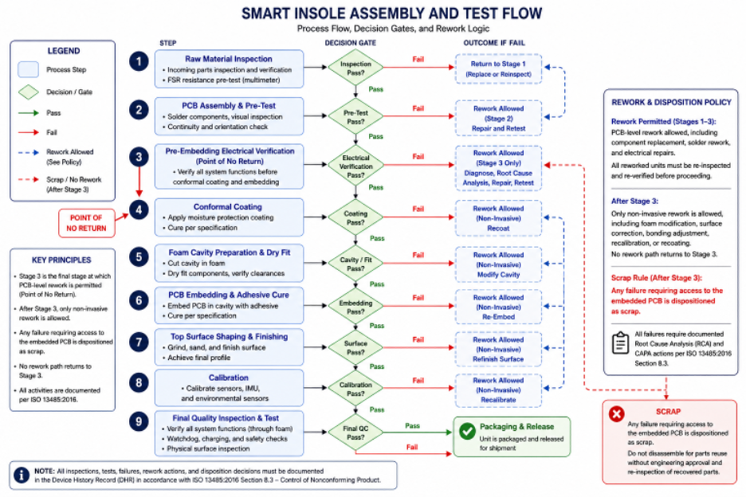
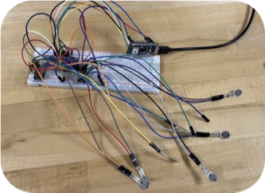
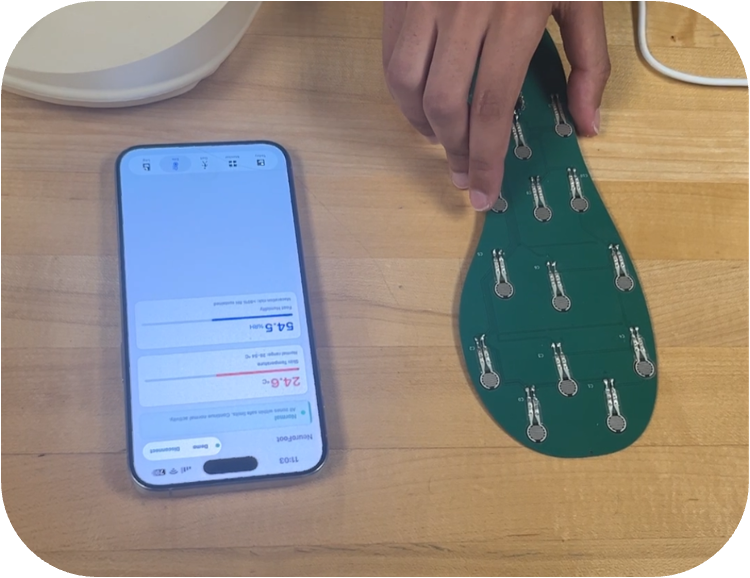
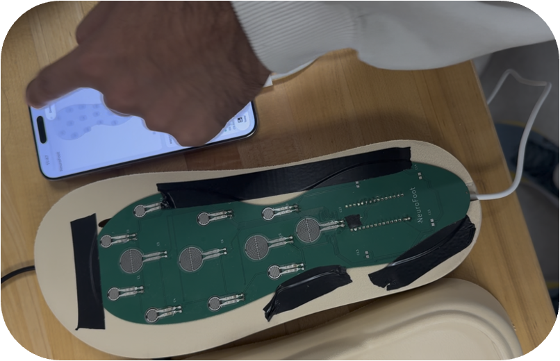

Overview
NeuroFoot is a wearable monitoring system — a 16-zone pressure-sensing insole embedded in a sandal — for adults with diabetic peripheral neuropathy. These patients lose protective sensation in their feet, so dangerous pressure can concentrate under the metatarsal heads for hours without any pain to warn them. Tissue breaks down silently, and the first sign is often an ulcer. NeuroFoot watches the pressure they can no longer feel and alerts them before that happens.
As part of a four-person team at USC (BME 555a), I owned the clinical framing and safety case: defining the clinical need and intended use, positioning the device for regulatory clearance, and leading the risk analysis (FMEA) that drove the design controls. This page follows that arc — from the patient problem to a verified prototype ready for handoff.
Clinical Need
Damage you can't feel is damage you can't stop
Unaware patient
With loss of protective sensation, a patient walks for hours with pressure concentrated under the metatarsal heads. No feedback, no pain — tissue damage develops silently.
Real-time alert
NeuroFoot detects when pressure exceeds a threshold and sends a WARN alert to the patient's phone — a cue to offload and, if needed, notify their clinician.
Clinical review
At follow-up, the clinician reviews weeks of pressure-trend data, identifies high-risk zones, and adjusts the care plan accordingly.
Indication for use
Adults (18+) with diabetic peripheral neuropathy at risk of plantar ulceration (IWGDF risk 2–3). Monitors plantar pressure across 16 zones, plus temperature and humidity, during daily walking. Prescription use only, under clinician supervision.
Intended use — and its limits
A non-invasive monitoring and threshold-alerting system. It detects threshold exceedance, not clinical conditions, and generates warning signals only. It does not diagnose, treat, or cure — an adjunct to standard diabetic foot care, with all clinical decisions made by the physician.
Users & Use Cases
Four stakeholders, ranked by risk
Because the primary user bears direct risk of harm, stakeholder priority follows ISO 14971 — the person who can't compensate for a device failure comes first.
Primary alert recipient; daily wear and charging. Direct risk of harm — top priority per ISO 14971.
Secondary alert recipient; assists with offloading. ADA identifies caregivers as essential in high-risk populations.
Reviews longitudinal data; modifies the care plan. IWGDF 2023 recommends periodic pressure monitoring.
Regulatory reviewer for premarket submission. Defines constraints: 21 CFR 890.5575, Class II.
The Device
What we built
16
Pressure zones · toes to heel · 50 Hz
<1s
Alert latency over BLE 5.0
3
Alert tiers · OK / WARN / CRITICAL
iOS
SwiftUI companion app + heatmap
Signal chain
FSR insole
16 zones
CD74HC4067
16→1 mux · 10kΩ ×16
Arduino Nano 33
nRF52840 · ADC · BMI270 · HS300x
iOS app
BLE 5.0 · heatmap · alerts
Manufacturing process flow
Assembly, test, rework, and release gates
A stage-gated flow defined when the embedded PCB could still be reworked, and when failures had to be scrapped for safety.

Firmware decision logic
Reads 16 FSR channels at 50 Hz and grades each zone against ADC thresholds, logging how long each zone spends in each state before transmitting over BLE.
Companion app
- ›Real-time 16-zone pressure heatmap & per-zone bar charts
- ›Gait metrics (steps, cadence, stance) from the BMI270 IMU
- ›Ambient temp & humidity for skin-maceration context
- ›WARN/CRITICAL banners + haptics, connection & battery status
Regulatory Strategy
A 510(k) path through a 2006 predicate
To reach market as a Class II device, NeuroFoot claims substantial equivalence to a legally marketed predicate — SmartStep (K060150). The differences are in form factor and connectivity, not intended use, which keeps the submission firmly in 510(k) territory.
| Feature | SmartStep (predicate) | NeuroFoot | Equivalence |
|---|---|---|---|
| Sensor | Resistive insole | 16-zone FSR via mux | Same modality |
| Pressure | Single threshold | 16-zone, 50 Hz + PTI | Enhanced resolution |
| Alerts | Audible/visual alarm | OK/WARN/CRITICAL + haptic | Same core function |
| Wireless | Control unit → PC | BLE 5.0 → iOS | Both wireless |
| Form factor | Insole + belt unit | Sandal + embedded MCU | Both wearable |
| Safety std | IEC 60601-1, ISO 14971 | Same + IEC 62304 | Same core standards |
Clinical guideline alignment: IWGDF 2023 (pressure offloading for neuropathic patients) · ADA 2024 (comprehensive foot exams + early intervention) · APMA (wearable pressure-offloading technologies).
Risk Analysis · my focus
FMEA — scoring what can't be felt
For a device whose users can't sense failure, risk scoring has to be unforgiving. I built the severity, occurrence, and detection scales around the intended-use population — anchoring the top of each scale on the case where the patient believes the device works but it doesn't. Each failure mode's RPN = S × O × D.
Severity (S)
Worst-case consequence if the failure reaches the patient undetected. 9–10 = direct injury or silent failure while the patient trusts the device.
Occurrence (O)
Probability over device lifetime, estimated from datasheets, literature, and prototype observations at PDR stage.
Detection (D)
Ability of design controls to catch the failure first. Higher = harder to detect; 9–10 = the device gives no indication at all.
| Failure mode | S | O | D | RPN | Risk |
|---|---|---|---|---|---|
| FSR adhesive delamination | 9 | 5 | 7 | 315 | HIGH |
| Moisture ingress / short | 7 | 5 | 7 | 245 | HIGH |
| Battery depletion / user | 7 | 5 | 5 | 175 | MEDIUM |
| BLE disconnection | 7 | 4 | 6 | 168 | MEDIUM |
| 60 Hz EMI false alerts | 5 | 4 | 6 | 120 | MEDIUM |
| HS300x cold-boot zero read | 2 | 4 | 3 | 24 | LOW |
Per ISO 14971, the two RPN ≥ 200 modes (FSR delamination, moisture ingress) required mandatory design controls before design verification.
Mitigations closed the high-risk items
FSR delamination
Medical adhesive + recessed channel + self-test
Moisture ingress
Conformal coating + IP44 + sealed FPC
Battery depletion
Low-batt alarm + caregiver push + wireless charge
BLE disconnection
Onboard buzzer + auto-reconnect + LED
Verification
9 of 10 components passed acceptance testing
Integration was verified in two stages — breadboard validation of all 16 channels and BLE characteristics, then a sandal-assembly walk test. Pressure channels, IMU axes, environmental sensors, the BLE link, and alert thresholds were all confirmed operational; graded alerts fired in under 200 ms. The one rejection: the BMM150 magnetometer, whose I²C bus is inaccessible on the Nano 33 Rev2 — excluded from the design.

Breadboard validation
Channel wiring and sensor readout before assembly.

BLE app check
Phone display confirmed live pressure values.

Sandal assembly test
Integrated insole and app checked during prototype handling.
9/10
Components passed acceptance
<200ms
Graded alert latency
2-min
Walk test · no BLE dropouts
±0.5°C
Temp accuracy · ±5% RH humidity
Reflection & Handoff
What I took from it, and what's next
The clearest lesson was that safety framing shapes engineering. Anchoring the FMEA scales on a patient who can't feel failure is what turned two abstract risks into mandatory design controls — the recessed adhesive channel and the sealed enclosure exist because the risk math demanded them. Writing the intended-use statement with equal care about what the device doesn't do kept the whole team honest about the 510(k) claim.
Fall 2026 handoff
The verified prototype passes to the next team with a documented path: implement the FMEA mitigations, translate the breadboard design to an Altium PCB (no 100 kΩ pull-downs, no Wire.begin(), no BMM150), run dynamic force calibration and IEC 60601-1-2 EMC testing, conduct human walking trials, and file the 510(k) against the K060150 predicate.